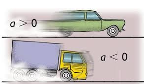

MRUV
O MRUV é o deslocamento de um corpo no espaço, que ocorre em uma trajetória retilínea, ou seja, que não pertence a qualquer curva ou circunferência. Como aponta o nome, uma das grandezas é variada ao longo do tempo. Essa grandeza é a velocidade.
Isso significa que o MRUV considera percursos em que a velocidade pode ser maior ou menor ao longo do tempo. Para isso, é necessária a ação da grandeza “aceleração”, que é representada por a e medida em [a]=m/s2.
- Aceleração: é representada por a e medida em[a]=m/s2.
- a = ΔV/Δt
- Equação horária da velocidade:
- V = V0 + a.t
- Equação horária da posição: A partir de estudos gráficos, os físicos desenvolveram uma fórmula que permite encontrar a posição (S) de um móvel que se desloca em MRUV:
- S = S0 + V0.t + a.t2/2
- Equação de Torricelli: Uma terceira fórmula é importante para o estudo do MRUV, ela é conhecida como equação de Torricelli e relaciona a velocidade, o deslocamento e a aceleração do móvel na trajetória. Essa expressão matemática surgiu pela substituição de V = V0 + a.t na equação de S =S0 + V0.t + a.t2/2.
- V2 = V02+2aΔs
- Espaço: é uma grandeza que determina sua posição em relação a trajetória, a partir da origem, podendo ser positivo ou negativo.